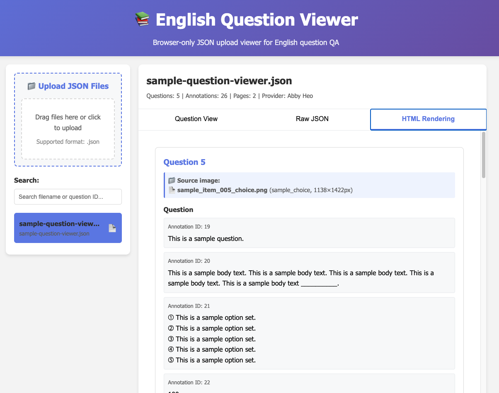

Portfolio case study · English exam content digitization
English Exam Content Digitization
Project Manager · April 2025 – August 2025
A case study on recovering an English exam content digitization workflow by first fixing data integrity, then adding a QC viewer and AI-assisted answer-sheet extraction path.
Situation
The client hired us to build a 200K-item English exam question bank. PDFs were split into page-level tasks, workers tagged the content, engineers converted the output into JSON, and the team delivered 20K–30K items every two weeks. Less than a month before the first delivery, the previous lead left. After the first delivery, the client said only about half of the output was usable and raised the possibility of damages. About 100K items had already been tagged under the previous design, with no handover material.
Diagnosis
There was no documentation of which workbooks were set up, what PNG resolution to use, or how to handle locked source files. The first delivery deadline was less than a month away.
I separated the problem into two layers.
The first was integrity. Workers had been instructed not to tag original question numbers, so there was no shared identifier connecting question content to answer-sheet content. On delivery days, engineers and PMs manually compared whole PDFs until 5 a.m. just to reconcile question and answer counts.
The second was capacity. Answer-sheet tagging was outside the contract scope, and two PMs were manually copying answer keys into Excel. That could not scale to 200K items.
The order mattered. If we increased capacity before fixing integrity, we would only deliver incorrect data faster.
Approach
Integrity chain
Changing the worker scope would have required rework on 100K already-tagged items. Instead, I used positional data already present in the platform.
Downloaded CSVs contained page information. I added two reference values: the source workbook’s true item count, including skipped items, and the cumulative item count by page. Each delivered JSON file corresponded to one workbook. With those three numbers, a mismatch could be narrowed from an entire delivery to a specific workbook and page.
Once the identifier chain existed, the next question was whether the output rendered correctly for the client. The platform team could not prioritize a QC viewer, so I built one with Cursor AI and hosted it on my personal GitHub account. I made it browser-only so the data could be inspected locally without uploading it to a backend.

Capacity chain
Answer-sheet layouts varied by publisher: single column, double column, boxed numbers, and mixed answer/explanation formats. Text extraction alone was not enough; answer mapping required layout understanding. I used Gemini Vision Pro, grouped similar layouts into batches, had reviewers check first-pass extraction, and fed that feedback into the next prompt/schema iteration. Manual PM copying became a repeatable pipeline.

Scale layer
After integrity and capacity stabilized, I added source tracking. Without tracking workbook setup, PNG conversion settings, and locked-file handling, the team could not distinguish worker error from source-file problems or push back to the client with evidence.
What Changed
After the first improvement cycle, question and answer counts matched for the first time. Based on client feedback, usable quality improved from below 50% to around 85%. After the second cycle, the final delivery phase stabilized with near-zero critical defects and no further escalation. The damages threat was withdrawn.
More importantly, the operating model changed. Before the identifier, mismatch meant manual searching. After it, the team could locate the broken workbook and page. Before the extraction workflow, PMs copied answer sheets by hand. After it, the work became a pipeline. Before the viewer, rendering defects appeared after delivery. After it, the team caught them before delivery.
Each improvement made something possible that had previously been impossible.
Framing
This project shows the Deployment Strategist pattern from another angle: a platform is only useful if the decision structure around it is right. Workers did the tagging, and engineers owned the JSON-conversion pipeline. My role was to diagnose the broken process, design the identifier connecting questions and answers, build the answer-sheet extraction workflow, create the QC viewer when the team could not wait, and define the order of judgment. I turned missing data, broken process, and client escalation risk into a workflow the team could operate.